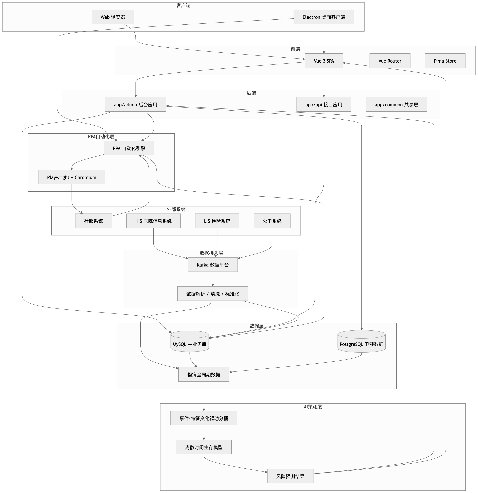

慢病全周期管理、RPA 数据互通与 AI 风险预测

iCare 医防融合协同平台面向基层医疗机构，支持高血压、糖尿病患者的建档、随访、评估、干预、转诊与数据同步等全流程管理，并集成 HIS、LIS、公卫系统等多源医疗数据，提供 AI 辅助诊断与风险预测能力。
前后端分离、多应用后端、桌面端本地化、双数据库支撑业务与算法。
三条逻辑主线：数据流 + 业务流 + 自动化流。
围绕患者慢病全周期管理，设置三类核心实体表，形成完整、连续、可追溯的数据链条。
作用：全库患者身份识别与跨机构数据关联的基础，实现同一患者在不同机构、不同系统、不同时间段内数据的统一归集。
核心字段：患者唯一标识、基本人口学信息、疾病类型、所属医疗机构、转入转出转诊记录。
模型意义：为模型训练提供唯一患者身份锚点，确保跨源数据可关联。
作用：记录随访期间仍持续产生管理记录的患者，以及结局尚未明确、仍处于随访或待核实状态的患者。
核心字段：队列状态、随访开始时间、最近有效随访时间、检查评估时间、持续管理标志、待核实标志。
模型意义：动态管理随访窗口，明确适用于风险预测和预警算法的人群范围。
作用：记录已明确发生终点事件的患者，定义死亡、严重并发症、急性加重、住院、靶器官损害、疾病进展、转诊、失访、迁出等结局。
核心字段：终点事件类型、发生时间、确认来源、事件说明、相关证据。
模型意义：为模型训练提供清晰、可追溯的标签定义，明确患者结局状态。
数据库设计不是单纯存储，而是为 AI 训练和风险预测服务。
解决封闭系统、无接口系统、遗留系统之间的数据互通问题——以合规方式模拟人工操作，补足传统接口对接能力不足。
社服系统等第三方异源机构系统不开放标准接口，无法通过以下常规方式完成数据对接：
痛点 → 能力 → 价值：六项核心优势。
平台已打通医院真实诊疗数据，能够整合：
基于患者状态变化轨迹，通过离散时间生存模型实现动态风险预测。适用于"事件发生时间不固定、患者状态持续变化、随访记录不等间隔"的慢病管理场景。
同一套输入特征可服务多个输出事件。输入统一来自患者基础信息、既往病史、随访记录、检验检查、用药、生活方式、疾病分级、并发症状态等数据。
Event-Feature Change-driven Bucketing — 解决传统分桶三大问题。
核心思想：按特征变化点和状态变化点切分区间，删除中间无信息变化的冗余行，同时保留精确的 enter 和 exit 时间。
| 区间 | 指标状态 | event |
| 60-61 | 正常 | 0 |
| 61-62 | 正常 | 0 |
| 62-63 | 正常 | 0 |
| 63-64 | 异常 | 0 |
| 64-65 | 异常 | 0 |
| 65-66 | 异常 | 1 |
| id | start | stop | 指标 | event |
| 1 | 60 | 63 | 正常 | 0 |
| 1 | 63 | 66 | 异常 | 1 |
传统离散时间比例风险模型要求协变量影响满足比例风险结构。机器学习离散时间生存模型放宽这个限制，直接学习个体在每个时间区间内的条件事件风险。
个体 i 在前 j 个区间的预测风险为 hi1, hi2, …, hij，活到 tj 的概率：
累计事件概率：
对每个个体、每个时间区间，模型输出 hij = fθ( xi,j−1 , ti,j−1 , tij )。事件区间似然贡献为 hij，非事件区间为 1 − hij。整体条件似然取负对数：
→ 在真正发生事件的区间给出高风险，在未发生事件的区间给出低风险。
基于门诊量、挂号记录、就诊人次、疾病谱、年龄结构和历史医疗支出数据形成预测能力。
以全周期数据为基础，通过 RPA 补足封闭系统对接能力，通过离散时间生存模型实现慢病风险预测，最终支撑基层医疗机构的随访、干预、转诊、资源调配和医保费用管理。